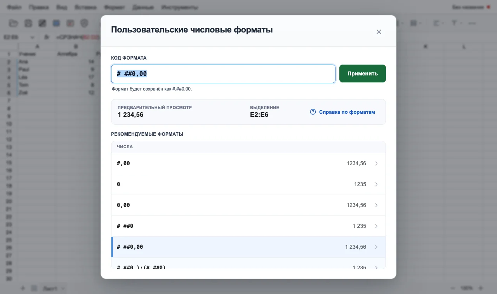

Числовые форматы
Формат меняет вид числа, а не его значение: вычисления сохраняют все десятичные знаки.
Выбор формата
Формат › Число или список Автоматически на панели кнопок.
| Формат | Пример |
|---|---|
| Автоматически | 1200,09 |
| Обычный текст | 1200,09, выровнено влево; введённое остаётся текстом |
| Число | 1200,09 |
| Процент | 120009,00%; 0,25 становится 25,00% |
| Научный | 1,20E+03 |
| Бухгалтерский | ₽(1200,09) |
| Валюта | ₽1200,09 |
| Дата, Время, Дата и время | для дат: 2017-11-29, 3:00 PM, 15:00… |
Символ валюты соответствует языку интерфейса.
| Кнопка | Результат |
|---|---|
| процент | |
| на один знак меньше | |
| на один знак больше |
Эти кнопки действуют и на числа списка. Чтобы округлить само значение, используйте ОКРУГЛ.
Пользовательский формат
Формат › Число › Пользовательский числовой формат…: выберите предложенный формат или напишите код. Образец показывает результат; Справка по форматам напоминает знаки; Применить задаёт формат выделению.

| Знак | Назначение | Код | 1234,5 показано как |
|---|---|---|---|
0 | цифра, включая ноль | 0,00 | 1234,50 |
# | цифра, если она нужна | #,## | 1234,5 |
| пробел | группирует тысячи | # ##0 | 1 235 |
% | процент | 0% | 123450% |
"текст" | текст, единица | 0,0 "m" | 1234,5 m |
E+00 | научная запись | 0,00E+00 | 1,23E+03 |
; | форматы для положительных, отрицательных, нулей, текстов | 0;-0;"нет" | 1235 |
[Red] | цвет | 0;[Red]-0 | отрицательные красным |
Код набирают с разделителями языка; окно показывает вид, в котором он сохраняется (#,##0.00), тот же, что в Excel.
Даты и время
| Код | 29 августа 2026 г., 14:30 |
|---|---|
dd/MM/yyyy | 29/08/2026 |
d mmm yyyy | 29 Aug 2026 |
dddd d mmmm yyyy | Saturday 29 August 2026 |
hh:mm | 14:30 |
dd/MM/yyyy hh:mm | 29/08/2026 14:30 |
Названия месяцев и дней показываются по-английски.
Единицы
В разделе Единицы измерения — форматы вроде 0,00 "V", 0,00 "Ω", 0,00 "mm": ячейка остаётся числом, с которым можно вычислять.